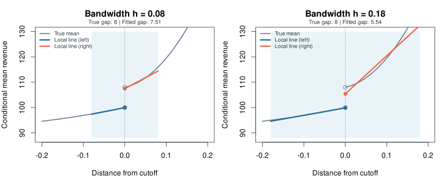

INTRODUCTION
実習の概要
この教材の数値について
三つの研究をもとにした教育用合成データを使う。図・表の†は教材用の数値を表し、原研究の結果は出典を付けて区別する。原研究から単純化した設定は、各事例の説明に記載している。
標準コースと発展課題
データ確認 → RD図 → 推定 → 仮定の点検 → 結果を文章化。
標準コースはY01〜Y06、R01〜R03（for文の練習）、C01〜C04、P01〜P04である。R01〜R03はY04の後、Y05の前に取り組む。発展のY07・Y08・P05は省略できる。上部の「次の未完了へ」は標準セルだけをたどり、17セルで完了する。発展も取り組むときは「発展を含む20セル」に切り替えてください。
必要な理論、Rの書き方、出力の読み方はこのページにまとめている。各段階の説明を読み、その下のRセルを実行してください。別のスライドや論文を開かずに、標準コースの報告課題まで進められる。
RDDの定義と変数
RDD（Regression Discontinuity Design、回帰不連続デザイン）は、割当変数が制度上の基準を超えたときに処置が変わる仕組みを利用し、境界の左右の比較から因果効果を推定する方法である。
飲食店の平均評価を半星単位に丸める例では、平均3.74は星3.5、3.76は星4と表示される。この教材では3.75以上を星4、未満を星3.5とする。平均評価3.75の直下と直上の売上を比較し、表示変更の効果を推定する。
| 役割 | 記号 | 口コミの例 |
|---|---|---|
| 結果変数（アウトカム） | Y | 知りたい結果：売上指数 |
| 割当変数（running variable） | X | 扱いを決める数値：丸める前の平均評価 |
| カットオフ（境界） | c | 扱いが変わる基準：3.75 |
| 処置 | D | 受ける扱い：星4の表示なら1、星3.5なら0 |
評価が大きく異なる店舗の比較には、料理や接客などの質の差が含まれる。RDDでは比較範囲を境界付近に限定し、評価に伴う連続的な売上の変化と、表示変更による不連続な変化を区別する。この教材では、基準以上ならD=1、未満ならD=0と、処置が確実に切り替わる設定を扱う。
DiDとの比較
DiDは、処置を受けた群の時間変化から、対照群の時間変化を引く方法である。RDDでは時間の前後に代えて、制度の境界の左右を比較する。分析者が単に中央値で二群に分けても、それによって処置が変わる制度がなければRDDにはならない。
処置の割当と反実仮想
同じ店が「星4の表示を受けた場合」と「星3.5の表示を受けた場合」に得る売上を、それぞれ潜在的結果と呼ぶ。この二つの差が表示の因果効果である。実際に観察できるのは片方なので、観察できないもう一方の結果（反実仮想）を比較相手から補う。
図の例†では、左から境界へ近づいた売上の平均が100、右から近づいた平均が108である。表示を星3.5に固定した売上の平均が境界で連続なら、境界の店が星3.5のままだった場合の平均を100で補える。星4での108との差8が、境界での表示の効果である。
同じ考えを両方の表示について置く。「条件付き平均が連続」とは、平均評価を境界へ近づけたとき、表示を固定した売上の平均が突然跳ばないことである。個々の店の売上が同じである必要はない。実習の推定値には標本による偶然のずれや近似の偏りがあり、図の8とは一致しないことがある。
RDDの識別仮定
| 条件・確認事項 | この事例で考えること |
|---|---|
| 中心の仮定：潜在的結果の平均が連続 | それぞれの表示を固定すれば、境界の左右から近づく売上の平均はつながる。左右に境界へ十分近い観測があることも必要。 |
| 同時に変わる制度を確認 | 3.75で広告や割引も始まるなら、売上の差は表示だけの効果とは読めない。 |
| 境界の片側を選べる仕組みを確認 | 店が評価を精密に操作して3.75を超えられると、左右で経営能力などが異なる可能性がある。 |
| 処置の意味と波及を確認 | ある店の星が上がって近隣店の客を奪う場合、店舗ごとの売上効果と市場全体の売上増加は異なる。 |
同じ境界で別の優遇も始まり、売上を4ポイント増やす場合を考える†。別の優遇を維持したまま星3.5の表示に戻した売上が104なら、表示変更の効果は108−104=4である。観察された差8をすべて表示の効果と解釈するには、他の制度が同時に変わらないことの確認が必要となる。
RDDはランダム割付を行わず、潜在的結果の平均の連続性を仮定する。有限の比較範囲に残る平均評価と売上の関係は回帰で調整する。推定対象は評価3.75付近の店への局所的な平均効果であり、他の評価帯や店舗への一般化には追加の根拠が必要である。
確認問題：推定精度と同時に変わる制度
標本を増やしても、表示と別の優遇の効果を分離できるとは限らない。観察された差8を精密に推定することと、そのうち表示の効果がいくつかを識別することは別の問題である。
ブラウザでの実行手順
- 上部が「RとRDDパッケージの準備完了」になるまで待つ。データは自動で準備される。学生のPCにRをインストールする操作や、CSVのアップロードはない。
- 「セル」は一度に実行するコードのまとまりである。LEVEL 1は完成コードを実行し、途中でfor文の短い穴埋めを練習する。LEVEL 2では空欄
__を埋め、LEVEL 3では指示からコードを書く。 - 「実行する」を押し、OUTPUTの数値・図を、その下の解釈と照らし合わせる。
#から行末は説明用のコメントである。 - 入力に迷った場合は「ヒントを見る」を使う。入力をやり直すときはセルの「元に戻す」を使う。「全消去」は全セルの入力と学習記録を消す。
初回のRとパッケージの読み込みには通信が必要である。学習記録は現在のブラウザに保存され、結果の図と出力は再読み込み後に再実行する。
Rの基本構文
| 記号・指定 | 入力と処理 | 返ってくるもの／読む場所 |
|---|---|---|
<- / $ | 結果を名前に保存／表やモデルから要素を選ぶ | model$coefで係数の表を取り出す |
y= / x= / c= | 結果の列／割当変数の列／境界の数値を渡す | c=は引数名。ベクトルを作るc()とは別 |
p=1 / nbins=c(15,15) | 左右を直線で近似／左右を各15区間にまとめて図示 | pは次数。検定のp値とは別。nbinsは図の設定 |
model$coef[1,1] | 係数表の1行1列を取り出す | 通常の点推定。[2,1]は補正後の点推定 |
model$ci[3,1] / [3,2] | 区間表の3行目から1列・2列を取り出す | ロバストな95%区間の下限・上限。summary画面の3行目という意味ではない |
subset(d, abs(x) <= h) | 表dから境界までの距離がh以下の行を選ぶ | 範囲を限定した表 |
表・ベクトル・関数・式の基本を確認する
データフレームは行と列を持つ表、ベクトルは値の並びである。yelpは店の表で、yelp$rating_rawはその中の評価の列を取り出す。計算結果を保存したものをobject（オブジェクト）と呼ぶ。
関数は関数名(引数名 = 値)で呼び出す。rdrobust::rdplot()の::は、rdrobustというパッケージに入っているrdplot関数を使う指定である。"Revenue index"のような引用符は文字列を表す。
| 書き方 | 意味 |
|---|---|
c(0.08, 0.12, 0.18) | 三つの数をベクトルにまとめる。 |
rating_raw >= 3.75 | 以上かどうかをTRUE/FALSEで判定する。as.integer()でTRUEを1、FALSEを0に変える。0/1の列をindicator（指示変数）と呼ぶ。 |
abs(x) | 絶対値。境界を0としたとき、符号を除いた距離になる。 |
y ~ x | yをxで説明する式。+は項の追加、a:bはaとbの積、a*bはa+b+a:b。 |
data = near | 式の変数をnearという表から探す。 |
for (h in widths) { ... } | widthsの値を順番にhへ入れ、波括弧の中を繰り返す。 |
使用するR関数
| 関数 | 入力 → 処理 | 出力 |
|---|---|---|
rdrobust::rdplot() | y、x、c → 区間平均と左右の線を描く | 図と、その作図情報を持つobject |
rdrobust::rdrobust() | y、x、c → 境界での差を局所的に推定 | 点推定、区間、バンド幅などを持つobject |
summary(model) | 推定object → 表示用に整理 | 画面に読みやすい結果表 |
hist() | 数値の列と区間 → 分布を集計 | ヒストグラム。probability=TRUEなら密度 |
rddensity::rddensity() | X=割当変数、c=境界 → 密度の連続性を検定 | 検定結果。rdrobustの小文字x=と区別 |
for (h in widths) | widthsの値を一つずつhへ入れる | 同じ処理の繰り返し。R01〜R03で練習してからY05で使う |
rbind(table, row) | 表と新しい1行 → 縦に結合 | 行を追加した表 |
本教材のrdrobust()では、kernelとbwselectを省略すると、Y04と同じ"triangular"と"mserd"を使う。固定幅hを指定したセルでは自動選択を置き換える。
データ確認と基本の回帰に使う関数
| 関数・指定 | 入力 → 処理 → 出力 |
|---|---|
dim(d) / head(d) | 表d → 大きさ／先頭を確認 → 行数・列数／最初の6行。 |
colSums(is.na(d)) | 表d → 欠損をTRUEとし列ごとに足す → 各列の欠損数。 |
table(d$star4) | 0/1の列 → 値ごとに数える → 各群の観測数。 |
aggregate(y ~ group, data=d, FUN=mean) | 表d → group別にyを平均する → 二群の平均値の表。 |
lm(y ~ d*x, data=near) | 選んだ範囲の表 → 回帰式を当てはめる → 回帰の結果object。 |
coef(model) | 回帰object → 係数を取り出す → 名前付きの数値。["star4"]で該当する係数を選ぶ。 |
data.frame(h=..., estimate=...) | 名前を付けた値 → 列にまとめる → 結果表。値が一つずつなら1行の表。 |
seq(3.5, 4, by=0.025) | 始点・終点・刻み → 等間隔の値を作る → ヒストグラムの区切りに使うベクトル。 |
abline(v=3.75) | 数値 → 現在の図に縦線を追加 → 境界を示す線。 |
入力・ヒント・保存
各セルは専用のR環境で動く。別のセルで変えたコードは引き継がない。必要な準備は自動で再実行される。各セルのデータ名はyelp・college・politics。
穴埋めの __ を置き換えて実行する。ヒント1 → ヒント2 → 解答例を利用できる。入力と完了記録はこのブラウザへ保存される。グラフと出力は再読込後に再実行する。
LEVEL 1｜完成コードを実行する
口コミの星と売上
口コミ評価の表示が売上に与える効果
研究対象は、口コミ評価の表示が飲食店の売上に与える効果である。平均評価が高い店は料理や接客の質も高い可能性があるため、評価帯の異なる店の単純比較では表示の効果を識別できない。
Lucaは丸め前の評価と売上記録を使い、半星表示が切り替わる境界で売上を比較した。個人経営店では売上への正の効果を報告し、チェーン店では明瞭な効果を確認していない。出典：Luca（2016年版）
実習では境界3.75に絞った1600店の合成データを使う。結果の単位は売上指数ポイントであり、円や%への換算は行わない。
変数辞書
| 列・名前 | 意味 |
|---|---|
restaurant_id | 店舗ID |
rating_raw | 丸める前の平均評価。3.50〜4.00、境界3.75 |
revenue_index | 表示変更後の売上指数。左側の境界の平均を100とした架空尺度 |
revenue_pre | 表示変更前の売上指数 |
seats | 事前に決まっている席数 |
x / star4 | セルで作成：境界からの距離 / 星4表示indicator |
セル Y01
データの確認と処置変数の作成
1行は独立した個人経営の飲食店。平均評価3.75を境に表示の星が変わる。
このセルの説明：口コミ研究の概要と変数
OUTPUT
結果の解釈
星4の店の売上が高くても、もともとの店の質の違いが含まれうる。
RDDのグラフ
横軸＝丸める前の平均評価、縦軸＝売上指数。星4の表示がなければ、売上の条件付き平均は3.75で滑らかにつながる、という仮定を置く。
rdplot()は区間平均と当てはめ線を描く。rdrobust()は局所的な効果と不確実性を推定する。
セル Y02
平均評価と売上の図示
横軸は表示された星ではなく、丸める前の平均評価。左右の当てはめ線は境界をまたがせず、それぞれ境界から0.15以内の店に当てる。
OUTPUT
結果の解釈
区間平均の点と左右の線を見比べ、同じ評価3.75での高さの差を読む。ビン数は平均をまとめる区間の数、h=0.15は線に使う範囲を決める。全範囲に一本ずつの直線を当てると、右側の曲がり方を拾って境界の差が小さく見えるため、ここでは線を近くに限定する。
局所線形回帰・バンド幅・カーネル
左右それぞれに、境界の近くで直線を当てる方法が局所線形回帰である。境界での高さを左右の直線から求め、その差を読む。範囲を決めるバンド幅hが0.15なら、評価3.60〜3.90の店を使う。
狭い範囲では曲線を直線で近似しやすい一方、観測数が減って推定値の偶然の散らばりが大きくなる。広げると観測は増えるが、曲がった関係を直線で表すずれが大きくなりうる。
カーネルは範囲内の重みの規則である。Y03のlmは全観測を同じ重みにする。Y04の三角カーネルは境界に近いほど重く、範囲の端ほど軽くする。図の点をまとめるビンの数は、推定の範囲や重みとは別の設定である。
交互作用項と回帰係数
評価を境界からの距離に直し、x = rating_raw − 3.75、星4表示をD = star4とする。左右で別の直線を当てる回帰式はY = α + τD + βx + γDx + uである。uは線だけで説明できない個々の売上のずれを表す。
Rのstar4 * xはstar4 + x + star4:xに展開される。:は積を表し、星4側だけにxの傾きを追加する。
| 側 | Rの当てはめ | 傾き |
|---|---|---|
| 星3.5：star4=0 | α + βx | β |
| 星4：star4=1 | α + τ + (β+γ)x | β+γ |
xを評価−3.75としたので、境界ではx=0。左右の差はstar4の係数τである。以下で、同じ±0.15・同じ一様な重みにそろえると、lmとrdrobustの通常の点推定が一致することも確かめる。
| Rの係数名 | 記号 | 意味 |
|---|---|---|
(Intercept) | α | 星3.5側の境界での高さ |
star4 | τ | 境界での高さの差 |
x | β | 星3.5側の傾き |
star4:x | γ | 星4側と星3.5側の傾きの差 |
セル Y03
lm()による局所線形回帰
境界から±0.15だけ残す。左右で傾きを変え、境界での高さの差を計算する。
このセルの説明：局所線形と回帰式
OUTPUT
結果の解釈
同じ範囲・重みなら二つの通常の点推定は一致する。続くY04では範囲と重みを変更し、近似の偏りを考慮した区間も求める。
セレクションバイアスと近似の偏り
処置を受ける店と受けない店で、処置がなくても売上の見込みが異なることによるずれがセレクションバイアスである。これは比較から因果効果を求められるかという識別の問題にあたる。一方、曲線を直線で近似すると境界での高さがずれる。rdrobustのバイアス補正は、この近似の偏りを対象とする。評価の操作や同時に変わる制度による識別の問題は、補正後も残る。
bwselect="mserd"は、RDの点推定の平均二乗誤差（Mean Squared Error, MSE）を小さくする基準で範囲を選ぶ指定である。MSEは繰り返し推定したときの誤差の二乗の平均で、偏りの二乗と分散に分かれる。
推定用バンド幅hと補正用バンド幅b
hの範囲で左右の直線を当て、通常の点推定を求める。別にbの範囲で曲がり方を二次式で調べ、直線近似の偏りを見積もる。この実習の出力ではbがhより広くなっている。b>hは常に必要な条件ではない。
頑健性の確認・感度分析は、幅などの設定を変えて結論を点検する作業である。ロバストな区間は、近似の偏りを補正したことによる不確実性も計算に含めた区間である。一つの推定から作る区間の計算法と、複数の設定の比較を区別する。
点推定・95%信頼区間・p値
点推定は、手元の標本から計算した効果の大きさである。別の標本を集めれば値は変わるので、信頼区間で推定の不確実性を示す。
95%信頼区間とは、前提が成り立つもとで標本を取り直して同じ方法で区間を作ると、約95%の区間が真の効果を含むという意味である。得られた一つの区間に真の効果が95%の確率で入るという意味ではない。
p値は、効果が0という仮説と推論の前提のもとで、今回以上に極端な検定統計量が出る確率である。この教材では、対応する95%区間が0を含まなければ、両側5%の基準で「有意」と読む。0を含むときは「差ゼロと両立する」と述べ、区間に含まれる効果の大きさも確認する。
有意かどうかは因果効果と読む根拠や、効果の実質的な大きさとは別である。連続性と制度の確認を踏まえ、点推定・区間・単位を一緒に報告する。
summary()の出力項目
出力下部のRD Effectの1行では、左のPoint Estimateが通常の点推定である。右のRobust Inferenceの下にz・p値・95%区間が並ぶ。Robust Inferenceの見出しの下にある値を確認する。
| 今回読む欄 | 意味 |
|---|---|
| Point Estimate | 通常の点推定。まず単位と対象を確認する |
| Robust Inference / [95% C.I.] | 補正後の値を中心にしたロバストな区間 |
| P>|z| | この区間に対応する両側検定のp値 |
| Number of Obs. | 左・右の全観測数 |
| Eff. Number of Obs. | hの範囲内で点推定に使う左・右の数 |
| BW est. (h) / BW bias (b) | 点推定の範囲／偏りを見積もる範囲 |
今回は設定の確認だけでよい欄
| 欄 | 読み方 |
|---|---|
| Order est. (p) | 点推定の次数。1なら直線 |
| Order bias (q) | 偏りの推定に使う次数。ここでは2（二次式） |
| Kernel | 範囲内の重み。Triangularは境界に近いほど重い |
| BW type | 自動選択の基準。mserdはMSE基準 |
| VCE method: NN | 近い観測を使って分散を見積もる方法。計算の詳細は扱わない |
| rho (h/b) | 二つの幅の比 |
| Unique Obs. | 左右それぞれの割当変数の異なる値の数 |
$coefと$ciはobject内の行列である。$ci[3,]という指定は、画面の3行目を指すものではない。
セル Y04
rdrobust()による推定と信頼区間
点推定、ロバストな95%信頼区間、左右のバンド幅と使用数を確認する。
このセルの説明：偏りの補正・区間・出力の読み方
OUTPUT
結果の解釈
対象は評価3.75付近で表示が半星変わる効果。通常の点推定と、補正後の値を中心にした95%区間を、売上指数ポイントで報告する。
バイアス補正後の推定値と信頼区間
通常の点推定から見積もった近似の偏りを差し引き、補正後の推定値を求める。ロバストな区間は補正後の推定値を中心とし、偏りを推定したことによる不確実性も幅に含める。
Y04の出力†では、通常の点推定は約5.102、補正後は約5.276、区間は約[1.003, 9.549]である。区間の中点は5.276になり、通常の点推定5.102とは少しずれる。
Y03は±0.15・一様な重みで約4.240、Y04は自動選択の約±0.077・三角形の重みで約5.102である。この差は、推定に使う範囲と重みの違いによる。Y03で係数の意味を学び、報告にはY04の推定と区間を使う。
曲率とバンド幅による近似の偏り

幅を広げると曲がり方の影響が大きくなり、境界での通常の点推定が8から離れる。実際の標本では、この偏りに加えて偶然のずれも生じる。
次の表†でも通常の点推定は約5.09→4.87→4.35と動く。区間が狭くなっても、通常の点推定の偏りが小さくなったとは限らない。実データでは真値を知らないので、事前に決めた幅で推定値と区間を両方報告する。
for文：同じ計算を順番に実行する
まず、1、2、3をそれぞれ2倍して表示する。print(1 * 2)、print(2 * 2)、print(3 * 2)と3行書く代わりに、for文では数を一つずつ取り出して同じ計算を繰り返す。
numbers <- c(1, 2, 3)は三つの数をまとめてnumbersという名前に保存する。for (n in numbers)は、その数を順にnへ入れる。{から}までが、毎回実行する部分である。print()は結果を画面に表示する。
| 何回目か | nに入る値 | 実行される計算 | 表示 |
|---|---|---|---|
| 1回目 | 1 | 1 * 2 | 2 |
| 2回目 | 2 | 2 * 2 | 4 |
| 3回目 | 3 | 3 * 2 | 6 |
セル R01
for文で数を2倍して表示する
実行前に出力を予想し、実行後に2、4、6が順に表示されることを確認する。
OUTPUT
結果の解釈
nが1、2、3と変わるたびに、波括弧の中を1回ずつ実行する。出力の[1]は値の位置を示すRの表示で、計算結果はその右の2、4、6である。
練習：計算結果を残す
次は1、2、3をそれぞれ3倍する。answers <- c()で空の入れ物を用意し、answers <- c(answers, 新しい値)で末尾に一つ追加する。1回目は3だけ、2回目は3と6、3回目は3、6、9が残る。
下の空欄を埋めて実行してください。最後のanswersで三つの結果をまとめて表示する。for文の外に置いた行は、繰り返しがすべて終わってから実行される。
セル R02
for文で3倍の計算を練習する
__を埋め、answersに3、6、9を順に保存する。
OUTPUT
結果の解釈
answersは3、6、9になる。空の入れ物を用意する行が波括弧の外にあるため、前の回の結果を残して追加できる。
元の数と計算結果を表にする
計算に使った数も残すには、2列の表にする。data.frame(n = n, doubled = n * 2)で「元の数n」と「2倍の結果doubled」を1行にまとめる。n = nの左側は列名、右側はその回の値である。
results <- data.frame()は空の表を作る。rbind(results, row)は、これまでの表の下に今回の1行を追加する。1回目の表は1行、2回目は2行、3回目は3行になる。
セル R03
for文の結果を表に追加する
元の数と2倍した数を、3行の表に保存する。
OUTPUT
結果の解釈
n列は1、2、3、doubled列は2、4、6になる。次の分析では、nに相当する値をバンド幅hに、2倍の計算をRDDの推定に置き換える。結果を1行ずつ追加する手順は同じである。
for文でバンド幅ごとの推定結果を並べる
R03のnumbersを三つの幅widthsへ、nをhへ置き換える。for (h in widths)は、幅のベクトルから一つずつhへ値を入れる。各回の結果を1行の表にして、rbind()で下へ追加する。
| 行 | 役割 |
|---|---|
sensitivity <- data.frame() | 空の結果表を用意する |
for (h in widths) { ... } | h=0.08、0.12、0.18で同じ処理を行う |
row <- data.frame(...) | 今回の幅と結果を1行にまとめる |
sensitivity <- rbind(sensitivity, row) | 結果表の末尾に今回の1行を加える |
h = hの左側は関数に渡す引数名、右側はfor文で取り出した今回の幅である。fitは毎回更新されるが、結果を表に追加するので三つの推定結果が残る。
ここでは偏りの推定用の幅をb=1.5*hとして固定する。これは幅を変える練習のための設定である。
セル Y05
バンド幅の感度分析
事前に定めたバンド幅0.08、0.12、0.18で推定値と信頼区間を比較する。
OUTPUT
結果の解釈
幅を変えた全結果を並べ、通常の点推定の動きと区間の幅を別々に説明する。区間が狭いことだけで幅を選ぶと、近似の偏りを見落としうる。
事前属性・処置前アウトカムによる点検
処置を受けなかった場合の結果は観察できないため、潜在的結果の連続性を直接検定することはできない。処置前の結果、事前に決まっている共変量（以下、事前属性）、割当変数の分布を用いて、境界での比較可能性を間接的に点検する。
このデータのrevenue_preは表示変更前の売上である。現実のデータでは、その時点の表示履歴も確認する。
| 点検 | なぜ調べるか | セル |
|---|---|---|
| 処置前の売上・契約 | これから受ける表示や当選が過去の結果を変えることはない。既に差があれば、別の要因を疑う。 | Y06・P04 |
| 入学前の成績 | 事前属性が境界で跳ぶなら、もともと異なる学生を比べている可能性がある。 | C04 |
| 割当変数の密度 | 境界直上への不自然な集中があれば、片側を選ぶ操作の手掛かりになる。 | Y07（発展） |
| 偽のカットオフ | 処置が切り替わらない位置にも差が出るなら、関数の近似などを再点検する。 | Y08（発展） |
検定が非有意でも、信頼区間が広ければ大きな事前差を排除できない。有意な結果にも偶然の可能性があるため、推定された差の大きさ、信頼区間、制度上の情報を合わせて判断する。
セル Y06
処置前売上の不連続性の検定
同じ推定を、評価表示より前の売上指数に適用する。
このセルの説明：事前の結果を調べる理由
OUTPUT
結果の解釈
区間に含まれる差の範囲を述べる。処置前から大きな差が跳んでいれば、現在の効果の解釈を再検討する。
密度検定の目的と出力
密度は、横軸の各範囲に観測がどれほど集まるかを表す。密度ヒストグラムでは棒の面積がその区間の観測割合である。評価を精密に操作できる店が境界の直上へ移れば、分布に不連続が現れる可能性がある。レビュー数が少ないと平均評価は飛び飛びになるので、実データでは刻み幅や同値の多さも調べる。
summary(rating_density)の上段にあるRobustのP>|T|が、密度の不連続について今回読むp値である。売上への処置効果を検定しているわけではない。
下に並ぶBinomial testsの表は、複数の範囲で左右の観測数を比べる補助的な二項検定である。この実習では上段を主に読み、下段の10個のp値から都合のよいものを選ばない。
セル Y07
割当変数の分布と密度検定 発展
発展：標準コースではこのセルを飛ばして進める。
ヒストグラムと密度の不連続検定を組み合わせる。
このセルの説明：密度と検定の読み方
OUTPUT
結果の解釈
上段のRobust P>|T|とヒストグラムを使って、境界での集中を点検する。制度上の操作可能性や評価の刻み幅も合わせて検討する。
偽のカットオフによる点検
評価3.60では両側とも星3.5表示である。そこで推定する差は偽のカットオフでの効果（プラセボ）で、表示変更によるジャンプはないはずだと予想する。大きい差が出れば、曲がった関係の近似や他の要因を調べ直す。
本当の境界3.75が混ざらないように、3.75未満の店を使う。h=0.06なら3.54〜3.66、b=0.08なら3.52〜3.68であり、どちらも3.75に達しない。検定が有意にならない場所を探すのではなく、この位置と範囲を先に決めて比較する。
セル Y08
偽のカットオフでの推定 発展
発展：標準コースではこのセルを飛ばして進める。
3.60を偽の境界にする。本当の3.75をまたぐと別の効果が混ざるので、星3.5側だけを使う。
このセルの説明：偽の境界を使う理由
OUTPUT
結果の解釈
先に定めた偽の境界での推定値と区間を報告する。本当の境界3.75が推定用hにも偏り推定用bにも入っていないことを確かめる。
LEVEL 1の標準セルが完了しました
境界、処置、結果の単位、仮定、一般化できる範囲を説明してから次へ進みましょう。
LEVEL 2｜空欄を埋めて実行する
名門大学と学力・賃金
変数辞書
| 列・名前 | 意味 |
|---|---|
applicant_id | 申請者ID |
score | 入学判定用得点（小数を持つ架空スコア）。境界80 |
wage_index | 卒業後の賃金指数（架空尺度） |
exit_score | 卒業時の共通試験得点。代替の進学先も含め全員を観測する設定 |
prior_score | 入学前の別の試験成績 |
eligible | セルで作成：80点以上の合格資格 |
名門大学の合格資格と賃金・試験成績
Sekhriはインドの大学の合格基準を利用し、基準付近の申請者について賃金と卒業時の共通試験成績を比較した。賃金の上昇を報告した一方、試験成績には明瞭な差を確認していない。この結果だけでは、大学名、人脈、試験で測られない能力などの経路を区別できない。出典：Sekhri（2020）
実習では、一つの大学、合格基準80点、全申請者を追跡できる架空の制度に単純化する。
このデータの設定：80点以上の申請者は全員が合格資格を得て、80点未満の申請者は資格を得ない。合格資格を得ることが、その後の賃金と試験成績に与える効果を調べる。
処置は合格資格を得ること
この実習の処置Dは、名門大学の合格資格を得れば1、得なければ0とする。得点Xが80点以上ならD=1、80点未満ならD=0となり、基準で処置が確実に切り替わる。
| 割当変数X | 境界c | 処置D | 結果Y |
|---|---|---|---|
| 入学判定用得点 | 80点 | 合格資格の有無 | 卒業後の賃金指数・卒業時の試験成績 |
得点79.9の申請者と80.1の申請者は、得点が近くても合格資格が異なる。資格を与えない場合の賃金の平均が80点で連続なら、80点直下の賃金から、境界の申請者が資格を得なかった場合の平均を補える。80点直上の賃金との差が、境界での合格資格の効果である。
資格を与える場合の潜在的結果の平均にも連続性を仮定する。得点を精密に操作できないか、80点で別の給付や優遇も始まらないかを確認する。C04では、資格が決まる前の試験成績に不連続がないかを点検する。RDDの仮定も参照してください。
セル C01
データの確認と合格資格の作成
__に基準点を入れて合格資格を表す0/1の変数を作り、資格別の人数と得点の範囲を確認する。
このセルの説明：大学研究の概要と処置の定義
OUTPUT
結果の解釈
eligible=0の得点は80未満、eligible=1の得点は80以上になる。次のセルでは、得点80の左右で賃金と試験成績を比較する。
セル C02
賃金と卒業時成績の図示
二つの結果について、rdplot()のyを入れ替える。結果をwage_plot・exam_plotへ保存する。
OUTPUT
結果の解釈
賃金は指数ポイント、試験成績は得点として、それぞれのジャンプを読む。機序については複数の説明が残る。
セル C03
合格資格の効果の推定
yとcを埋めてモデルを保存する。境界80点で、合格資格が賃金と試験成績に与える効果を求める。
OUTPUT
結果の解釈
試験成績で非有意でも「教育効果が厳密にゼロ」とは言えない。試験が測らない能力の変化もありうる。
セル C04
入学前成績の不連続性の検定
prior_scoreを結果にする。卒業時成績は処置後の結果なので、事前属性の代わりにはならない。
OUTPUT
結果の解釈
異なる結果変数を試すことと、事前属性を点検することは目的が違う。
LEVEL 2の標準セルが完了しました
境界、処置、結果の単位、仮定、一般化できる範囲を説明してから次へ進みましょう。
LEVEL 3｜指示文からコードを書く
政治献金と政府契約
変数辞書
| 列・名前 | 意味 |
|---|---|
election_id / donor_id | 選挙ID / 献金企業ID。それぞれ一度だけ登場 |
margin | 献金先候補−対立候補の得票率差（パーセントポイント）。境界0 |
contracts_after | 選挙後の政府契約額指数（架空尺度） |
contracts_before | 選挙前の政府契約額指数 |
| won | セルで作成：当選indicator。marginが境界からの距離を兼ねる |
献金先候補の当選が政府契約に与える効果
Boas・Hidalgo・Richardsonはブラジルの選挙で、献金先候補の当選が企業の政府契約に与える効果を分析した。政権与党PTの候補の当選により、公共事業を手がける献金企業の政府契約が増える結果を報告している。この結果だけで個々の契約の違法性は判定できない。出典：Boasほか（2014）
原研究はブラジルの連邦下院選挙と企業献金を扱う。実習は二候補・一議席の架空選挙へ単純化する。原研究の比例代表制に「得票率50%」を当てはめない。
同じ企業や選挙を複数行で繰り返さない合成データ。実データで複数企業が同じ候補へ献金している場合は、依存関係に応じた推論が必要。
| 要素 | この実習での比較 |
|---|---|
| 観測対象 | 選挙前に一人の候補へ献金した企業。各企業は一つの選挙だけに登場。 |
| 割当変数と境界 | marginは献金先−対立候補の得票率差。−0.2は僅差の落選、+0.2は僅差の当選。境界は0。 |
| 処置と対照 | 献金先が当選した企業と、献金先が落選した企業。どちらも既に献金している。 |
| 結果と対象 | 選挙後の政府契約指数。接戦での「献金先の当選効果」を求める。 |
| 比較の根拠 | 接戦の境界で、当落以外による受注の見込みが滑らかにつながると仮定。精密な得票操作や当落に連動する他の変化を調べる。 |
比較する両群はともに献金企業である。この設計の推定対象は献金先候補の当選効果であり、献金すること自体の効果ではない。
セル P01
観測単位の確認と当選変数の作成
1行は一つの選挙で、事前に一人の候補へ献金した一社。marginは献金先候補と対立候補の得票率差（ポイント）。wonを作り、行数・欠損・勝敗別の数を表示する。境界は0なのでmarginがそのまま境界からの距離になる。
このセルの説明：政治献金研究の概要と比較対象
OUTPUT
結果の解釈
全企業が事前に献金済み。献金企業と非献金企業を比較しているのではない。
セル P02
得票率差と選挙後契約額の図示
contracts_afterを縦軸、marginを横軸、c=0、p=1でrdplot()を実行し、contract_plotへ保存する。軸名とタイトルも付ける。ビン数は自動選択のままでも、nbinsで指定してもよい。
OUTPUT
結果の解釈
大差の勝者と敗者では企業の属性も違うかもしれない。境界付近へ比較を絞る。
セル P03
献金先候補の当選効果の推定
rdrobust()で選挙後の契約指数への効果を推定し、contract_rdに保存してsummary()を表示する。局所線形、境界0とする。
OUTPUT
結果の解釈
当選効果があっても、それだけで個別の契約が違法だったとは判定できない。献金自体の効果でもない。
セル P04
選挙前契約額の不連続性の検定
contracts_beforeを結果変数にして、before_rdへ保存しsummary()を表示する。
OUTPUT
結果の解釈
推定は約3.0、95%区間は約[-1.9, 8.0]†。「差ゼロと両立する一方、約8ポイントの事前差も排除できない」と読む。主効果約9.3と比べても無視できない幅であり、事前の比較可能性には不確実性が残る。
セル P05
当選効果のバンド幅感度分析 発展
発展：標準コースではこのセルを飛ばして進める。
得票率差±3、±5、±8ポイントで推定し、h・estimate・lower・upperの4列を持つ表contract_sensitivityを作る。b=1.5*hとし、Y05のfor文を参照。
OUTPUT
結果の解釈
事前に定めた三つの幅をすべて報告し、推定値が動くならその大きさも説明する。
LEVEL 3の標準セルが完了しました
境界、処置、結果の単位、仮定、一般化できる範囲を説明してから次へ進みましょう。
REPORT
分析結果の報告
報告に含める項目
「［割当変数］の［境界］付近で、［処置］が［結果］を［推定値・単位］変えると推定した。近似の偏りを補正した95%信頼区間は［下限、上限］。［点検結果］から［点検の結論］。ただし［区間に残る差や制度上の懸念］には不確実性が残る。」
政治献金では「献金先候補の当選」、大学では「合格資格」、口コミでは「半星の表示変更」と書く。
報告例：口コミ評価の表示と売上
「平均評価3.75付近の店について、星3.5から星4への表示変更が売上指数を約5.10ポイント増やすと推定した†。近似の偏りを補正した95%信頼区間は約[1.00, 9.55]で、0を含まない。表示変更前の売上では約−0.49、区間は約[−5.59, 4.54]だった。事前の差ゼロと両立するが、数ポイントの差は排除できない。表示以外の制度変更や評価の精密な操作がないかを確認し、潜在的結果の平均が境界で連続という仮定のもとで解釈する。対象はこの境界付近の店舗である。」
大学については合格資格の効果、政治献金については献金先候補の当選効果を報告する。推定対象、点推定と単位、信頼区間、仮定の点検結果、解釈の限界を記載する。
提出課題
- 口コミ：単純な二群平均とRDDの推定値は、なぜ違うのか。
- 名門大学：賃金と試験成績の結果から言えること、言えないことを各一つ書く。
- 政治献金：P03の結果を上の型で報告し、献金自体の効果ではない理由を説明する。
- 共通：非有意な事前属性検定は、識別の仮定を証明するか。
原研究と参考資料
- Luca, Reviews, Reputation, and Revenue: The Case of Yelp.com（2016年版 working paper）
- Sekhri (2020), Prestige Matters, AEJ: Applied Economics
- Boas, Hidalgo, and Richardson (2014), The Spoils of Victory, Journal of Politics
- Cattaneo, Idrobo, and Titiunik (2020), A Practical Introduction to RD Designs: Foundations
- RD Packages：推定・図示・密度検定の公式資料
- webR：ブラウザ内で動くR
三つの原研究の研究目的と結果は、各事例の導入に記載している。以下に原論文と公式資料を示す。